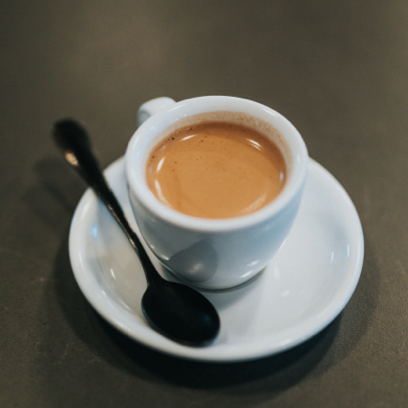
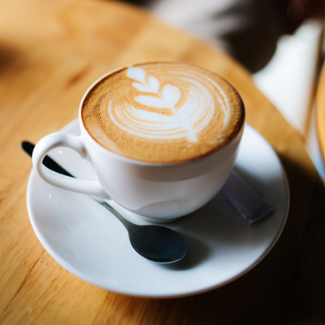
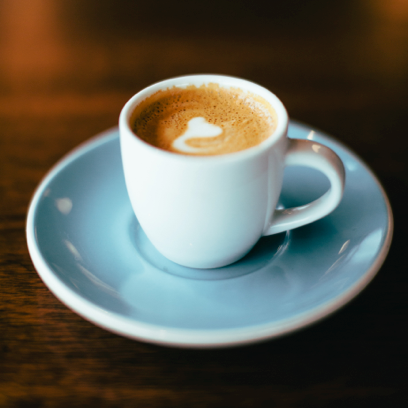

Espresso
Click on image to see the project

Innehåll: 1 espresso. Espresso är själva grunden till de flesta olika kaffesorter och härstammar från Italien. Det här är rent, koncentrerat kaffe som kan serveras antingen som enkel eller dubbel, men finns också som ristretto vilket är en halv shot eller som lungo där mer vatten får gå igenom samma mängd kaffe i espressomaskinen. En enkel görs med 7 gram kaffe och en dubbel på 14 gram.
Cappuccino
Click on image to see the project

Innehåll: 1/3 espresso, 2/3 skummad mjölk. En lite mjölkigare kaffevariant där man har två delar mjölk i en del espresso. I Italien är det en förmiddagsdryck som inte dricks efter klockan 11, men utanför landets gränser så gäller inte samma regler. En cappuccino känns lite krämigare än en latte och har mer av ett skum på toppen.
-->
Macchiato
Click on image to see the project

Innehåll: 1 espresso, liten skvätt skummad mjölk
Macchiato betyder “fläckad” på italienska och kommer av det karakteristiska mörka espressokaffet med en liten mjölkskvätt på toppen. Beställer du däremot en Latte Machiatto så får du en stor mängd mjölk med en skvätt kaffe på toppen.